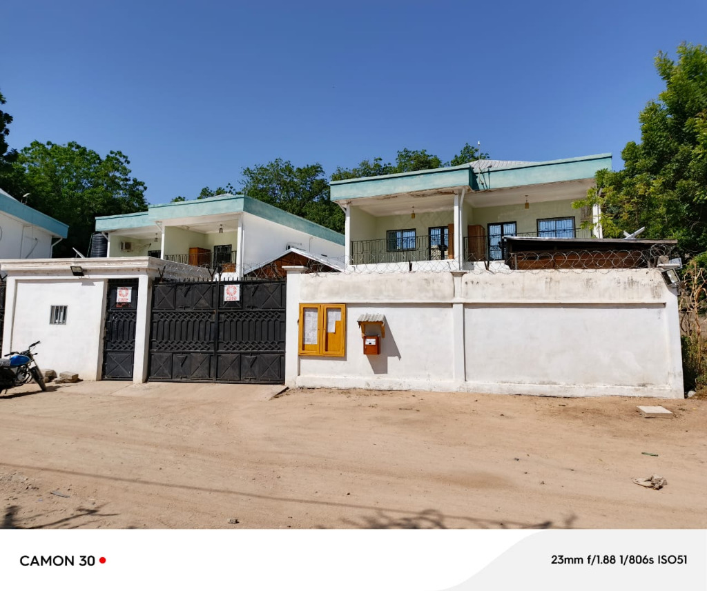
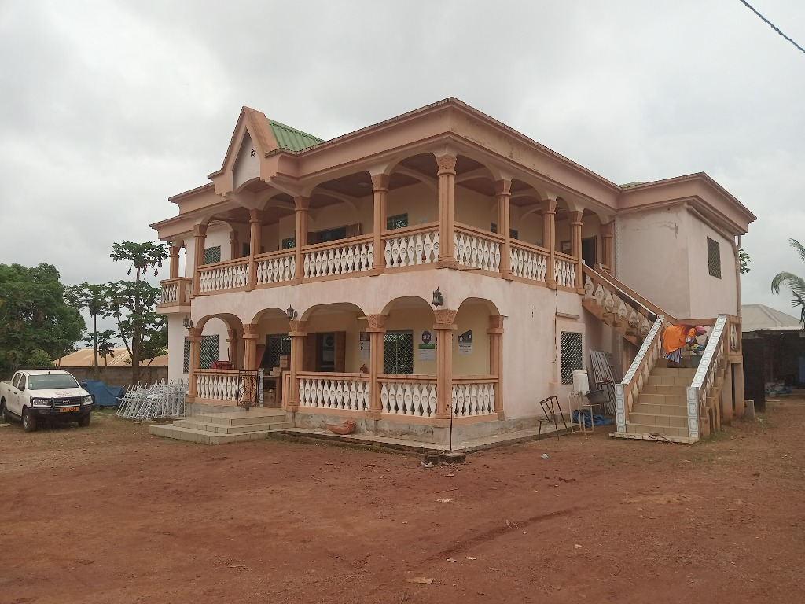
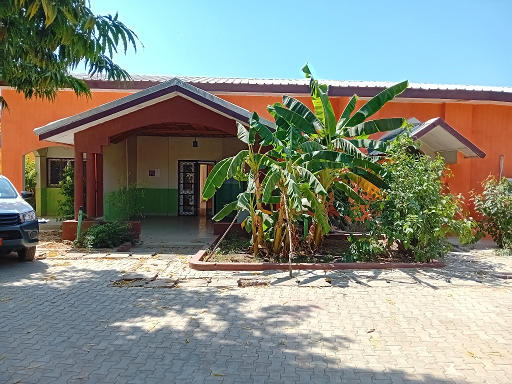
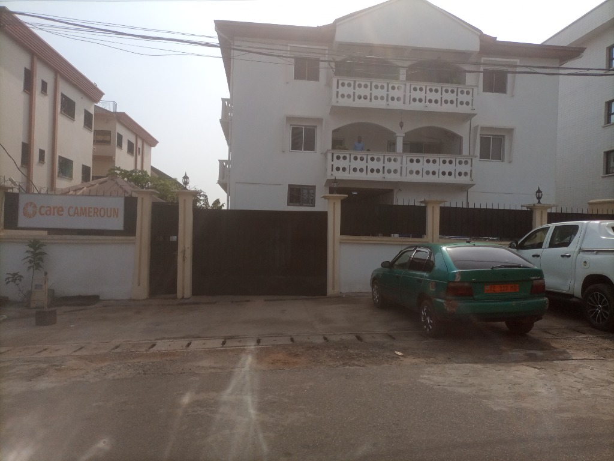
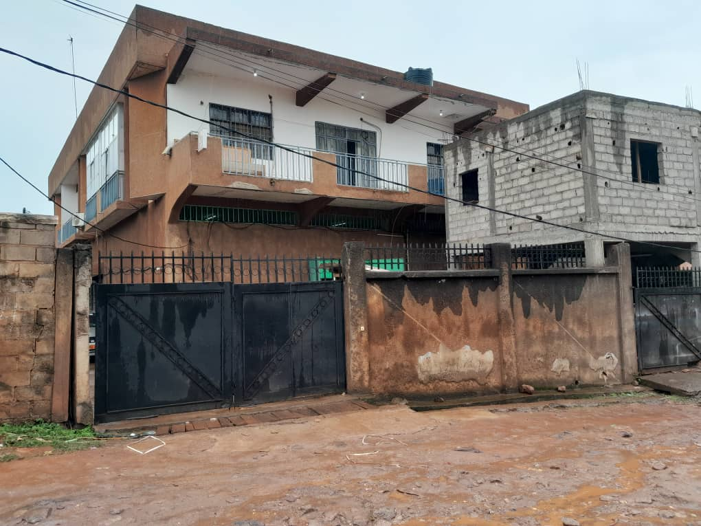
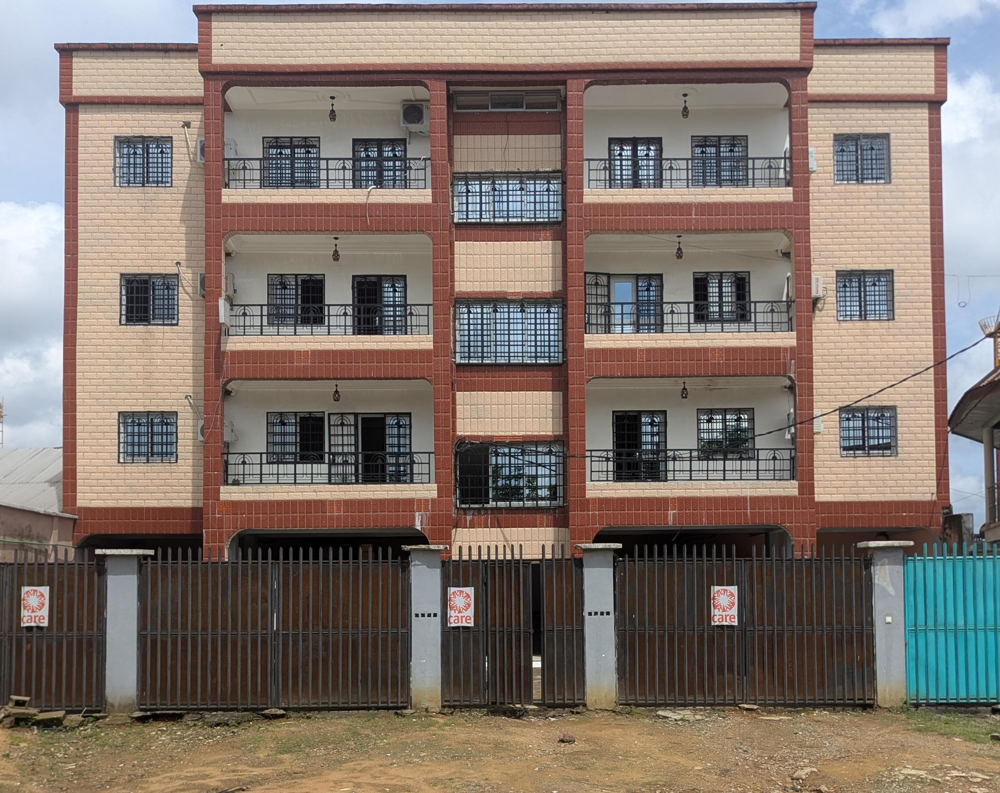

Bases de Care au Cameroun
Notre présence au Cameroun en 2024 est marquée par cinq bureaux dont :
un bureau de base à Maroua (Extrême-Nord), deux bureaux de
coordination à Yaoundé (Centre) et Garoua (Nord), deux sous-bureaux de
CARE situés à Douala (Littoral) et Batouri (Est).
Source et Images © Care
Maroua

Batouri

Garoua

Yaoundé (Bureaux de coordination)

Yaoundé (sous-bureaux TITI-GARAGE)

Douala
